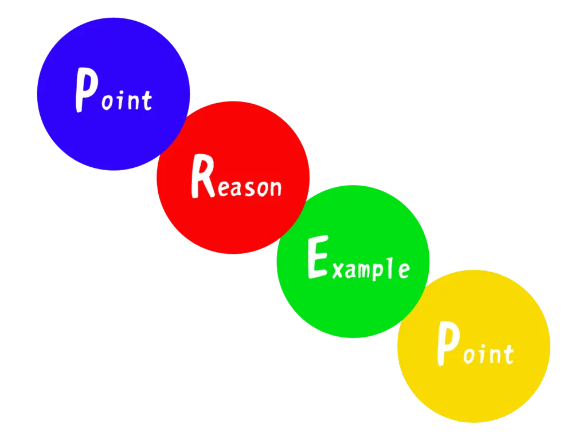

初心者Webライター必見！わかりやすい文章を書く11のコツ

「クライアントからの修正依頼が多い」
「わかりやすく書けているか自信がない」
「どう書けば良いか分からない」
Webライターを始めたばかりの頃は、このような悩みを持つ人が多くいます。
Webライターにとって、「わかりやすい文章」を書くスキルは、継続案件や単価アップに直結する、まさに「命綱」とも言える重要なスキルです。
この記事では、初心者Webライターがつまずきがちなポイントを押さえつつ、「わかりやすい文章を書くための具体的なコツ」を厳選して11個紹介します。
すぐに使える小手先のテクニックだけでなく、執筆前の「構成」の作り方や、書き終えた後の「推敲（すいこう）」の方法、日々の「練習法」まで、わかりやすい文章を書くために必要なノウハウを網羅しました。
この記事でわかること。
- わかりやすい文章のコツは「構成」で決まる
- 「わかりやすい文章」の基本テクニック
- 避けるべき「わかりにくい文章」3つの例
- 推敲（すいこう）のコツ
- 「記事タイトル」作成のコツ
- わかりやすい文章のコツを掴む練習法
 まつお
まつお実際にWebライターとして活動している筆者も実践しています。
この記事を読めば、あなたの文章は読みやすくなり、自信を持ってクライアントに記事を納品できるようになるはずです。
ぜひ、参考にしてください。
わかりやすい文章のコツは「構成」で決まる

「わかりやすい文章」と聞くと、つい「てにをは」や言葉選びなどの「テクニック」ばかりに目が行きがちです。
しかし、Webライターが書く記事のわかりやすさは、実は書き始める前の「構成」で9割決まると言っても過言ではありません。
まつお読者が迷子にならず、スラスラと読み進められる「設計図」こそが最重要です。
ここでは、文章本体を書く前に押さえておくべき、構成のコツを3つ紹介します。
- PREP法で結論から書く
- 記事全体の構成（骨子）を先に作る
- 信頼性のある根拠（一次情報）を示す
順番に見ていきましょう。
コツ1：PREP法で結論から書く
Webライティングの基本中の基本が「PREP（プレップ）法」です。
PREP法とは、以下の流れで文章を組み立てる型（テンプレート）を意味します。
- Point（結論）：まず、伝えたい「結論」を述べる
- Reason（理由）：次に、その結論に至った「理由」を説明する
- Example（具体例）：そして、「具体例」やデータ（根拠）を示す
- Point（結論）：最後に、もう一度「結論」を繰り返してまとめる
このフォーマットで書く理由は、Webの読者は疑問を解決するために検索しているため、その答えを早く知りたがっているからです。
「まず結論から」を徹底するだけで、読者のストレスは大幅に減り「この記事はわかりやすい」と感じてもらいやすくなります。
コツ2：記事全体の構成（骨子）を先に作る
いきなり本文を書き始めてはいけません。必ず、記事全体の「構成案（骨子）」を先に作りましょう。
構成案とは、記事の見出し（h2、h3）を組み立て、それぞれで何をどの順番で書くかを決めた「設計図」を指します。
構成案なしで書き進めると、途中で話が脱線したり、同じことを何度も説明してしまったりと、論理が破綻しがちです。
筆者も駆け出しの頃、構成を作らずに書き進めてしまい、クライアントから「結局、何が言いたいのか分かりません」と厳しい指摘を受けた経験があります。
まず全体の流れ（設計図）を固めることで、読者が「次に何が書かれているか」を予測しながらスムーズに読み進められる、わかりやすい記事が完成します。
コツ3：信頼性のある根拠（一次情報）を示す
Webライターが書く記事には、「信頼性」が欠かせません。
あなたの意見や感想だけではなく、主張を裏付ける「客観的な根拠」を必ず示しましょう。
例えば、「〇〇が人気です」と書くなら、その根拠となる具体的なデータ（例：〇〇総研の調査結果、公的機関の統計）を引用します。
まつお特に意識したいのが、公的機関（省庁など）や研究機関、専門家が発表している「一次情報」です。
信頼できる根拠を示すと、文章の説得力が格段に増し、読者にとって「わかりやすく信頼できる記事」になります。
Webライターが実践すべき「わかりやすい文章」の基本テクニック
記事の設計図（構成）が完成したら、いよいよ本文の執筆です。
ここからは、読者がスラスラと読み進められる文章を書くための、即効性の高い5つの基本テクニックを紹介します。
私もライターを始めた頃はこれらを意識するだけで、クライアントからの修正依頼が格段に減りました。
ぜひ実践してみてください。
- 一文は「一文一義」を徹底する
- 主語と述語の関係を意識する
- 同じ文末表現を繰り返さない
- 具体的な数字や固有名詞を活用する
- 難しい言い回しを簡単な表現に変える
それぞれ、解説します。
コツ4：一文は「一文一義」を徹底する
わかりやすい文章の最大のコツは「一文を短くすること」です。
具体的には「一文一義（いちぶんいちぎ）」で書きましょう。
一文一義とは「1つの文で伝える情報は1つだけ」という意味です。
駆け出しのWebライターは「〜で、〜ですが、〜なので、〜しました。」と読点（、）でつなぎ、情報を詰め込みすぎてしまう人が多い印象があります。
一文が長くなると、読者は「結局、何が言いたいの？」と混乱し、読むことに疲れを感じて離脱してしまうのです。
まつお例文を紹介しますね。
（悪い例）
Webライターは読者ファーストが重要で、読者の悩みを解決する記事を書く必要がありますが、SEOも意識しないと検索上位に表示されません。
（良い例）Webライターは読者ファーストが重要です。
読者の悩みを解決する記事を書く必要があります。ただし、SEOも意識しなければ、検索上位に表示されません。
目安として「一文は60文字以内」を意識すると、自然と一文一義を守りやすくなります。
コツ5：主語と述語の関係を意識する
文章が「ねじれる」と、途端にわかりにくくなります。
ねじれを防ぐために「主語（〜は、〜が）」と「述語（〜です、〜します）」の関係性を常に意識しましょう。
特に、主語と述語が遠く離れると、読者は「誰が（何が）どうしたの？」と文意を追えなくなります。
（悪い例）
Webライターが単価を上げるための課題は、クライアントに評価される記事を書けないのは、スキル不足が原因です。
→主語「課題は」に対して、述語「原因です」が対応しておらず、ねじれています。
（良い例）Webライターが単価を上げるための課題は、スキル不足が原因でクライアントに評価される記事を書けないことです。
→主語「課題は」に対して、述語「ことです」が正しく対応しています。
「〜は」や「〜が」で文を始めたら、主語に対応する述語が正しく結ばれているか、必ずチェックする癖をつけましょう。
コツ6：同じ文末表現を繰り返さない
「〜です。」「〜です。」「〜です。」 「〜ます。」「〜ます。」「〜ます。」
このように、同じ文末表現が3回以上続くと、文章全体が非常に単調で幼稚な印象を与えてしまいます。
読者はリズムの悪さに飽きてしまい、読むのをやめてしまうかもしれません。
Webライターは、文末表現のバリエーションを意識的に増やすことを心がけましょう。
（文末表現のバリエーション例）
・〜です。〜ます。（基本形）
・〜でしょう。〜かもしれません。（推量）
・〜しましょう。〜ください。（呼びかけ・命令）
・〜が重要です。〜必要があります。（強調）
・〜（体言止め）
・〜と思いませんか？（疑問形）
これらをバランス良く散りばめれば、文章に心地よいリズムが生まれ、読者をグッと引きつけられます。
コツ7：具体的な数字や固有名詞を活用する
読者の頭の中に、書き手が伝えたいイメージを正確に届けるには、「具体性」が命です。
曖昧な表現を避け、具体的な「数字」や「固有名詞」を積極的に使いましょう。
（曖昧な例）
Webライターは、たくさん記事を書けばすごく稼げるようになります。（具体的な例）
Webライター未経験だったAさんは、「ランサーズ」で半年間毎日1記事（3,000文字）を納品し続けた結果、月収が5万円から30万円にアップしました。
まつお「たくさん」「すごく」といった形容詞や副詞だけでは、人によって受け取り方が変わりますね。
「月収30万円」「3,000文字」といった具体的な数字や、「ランサーズ」という固有名詞を使うと、一気に解像度が上がり説得力が増します。
コツ8：難しい言い回しを簡単な表現に変える
Webライターは「専門家」ではありません。
読者と専門家の間に立ち、難しい情報を「翻訳」する通訳者のような存在です。
そのため、専門用語やカタカナのビジネス用語、難しい漢語表現は、できる限り「中学生でもわかる」平易な言葉に言い換えましょう。
読者の知識レベルは様々です。一つでも知らない単語が出てくると、「この記事は難しくて私には合わない」と判断され、即座に離脱されてしまいます。
（難しい例）
この施策のKPI達成のため、アサインされたリソースを最適化し、エビデンスを元にPDCAを回します。（簡単な例）
この企画の目標（KPI）を達成するため、決められた担当者で最大限の成果を出せるよう動きます。その際、客観的な証拠を元に、改善を繰り返します。
以下のように（）内で補足するのも手です。
「遵守（そんしゅ）する→守る」「齟齬（そご）→行き違い」など。
常に簡単な日本語に変換できないか考えるクセをつけましょう。
Webライターが避けるべき「わかりにくい文章」3つの例
ここでは、特に初心者のWebライターが陥りやすい「わかりにくい文章」の典型的なパターンを3つピックアップします。
「知らず知らずのうちに、自分もやっているかも…」という視点で、悪い例文と改善例を比較してみてください。
この「わかりにくい例」を避けるだけでも、あなたの文章は格段に読みやすくなります。
- 例文で改善：読点（、）だらけで長い文章
- 例文で改善：主語が曖昧な文章
- 例文で改善：指示語（こそあど言葉）を多用した文章
一つずつ見ていきましょう。
例文で改善：読点（、）だらけで長い文章
読点（、）で文を際限なくつなげてしまうのは、Webライターが最もやりがちな失敗例のひとつです。
読者は息継ぎをする場所（句点「。」）がないため、一度に大量の情報を処理しなければならず、非常にストレスを感じます。
（悪い例）
Webライターとして独立を目指すなら、まずクラウドソーシングで実績を積むのが王道ですが、単価が安い案件も多く、疲弊してしまう人も多いので、ポートフォリオをしっかり作って直接営業することも視野に入れつつ、自分の得意分野を見極めることが重要です。
→一文で100文字を超えており、情報が詰め込まれすぎています。（良い例）
Webライターとして独立を目指すなら、まずクラウドソーシングで実績を積むのが王道です。
ただし、単価が安い案件も多く、疲弊してしまう人も少なくありません。
ポートフォリオをしっかり作って直接営業することも視野に入れましょう。その際は、自分の得意分野を見極めることが重要です。
このように、情報の区切りが良いところで文を分け（「。」を打つ）、適切な接続詞（「ただし」「その際は」など）を使うだけで、驚くほど読みやすくなります。
例文で改善：主語が曖昧な文章
日本語は主語を省略しても文意が通じてしまうことが多い言語です。
そのため、日常会話では問題なくても、Web記事では「誰が（何が）」行動したのかが曖昧になりがちです。
まつお読者は文脈を深く読み取ってはくれません。
以下の例文のように、主語が曖昧だと、誤解や混乱を招いてしまいます。
（悪い例）
クライアントに記事を納品した後、修正指示がありました。急いで対応しましたが、評価されませんでした。
→「誰が」対応し、「何が」評価されなかったのか曖昧です）
（良い例）
クライアントに記事を納品した後、先方から修正指示がありました。私が急いで修正対応しましたが、その記事（または修正対応）はクライアントから評価されませんでした。
「誰が」「何が」を明確にするだけで、文章の責任の所在がはっきりし、読者はスムーズに内容を理解できますね。
例文で改善：指示語（こそあど言葉）を多用した文章
「これ」「それ」「あれ」「このような」といった指示語（こそあど言葉）は、使いすぎると非常にわかりにくい文章になります。
読者が「それって、何を指してるんだっけ？」と、いちいち前の文に戻って確認する手間が発生するからです。
（悪い例）
WebライターにはSEOの知識が不可欠です。なぜなら、これは検索上位表示に必要だからです。
しかし、それだけでは読者の満足度は得られません。
あれもこれも対策するのではなく、まずはこれを意識すべきです。
→「これ」「それ」「あれ」が何を指しているのか、非常に分かりにくい。（良い例）
WebライターにはSEOの知識が不可欠です。なぜなら、SEOの知識は検索上位表示に必要だからです。しかし、SEO対策だけでは読者の満足度は得られません。
様々なテクニック（あれもこれも）に対策を広げるのではなく、まずは読者の疑問に答えること（これ）を意識すべきです。
指示語を使うのは、直前に出てきた言葉を指すことが明確な場合のみに留めましょう。
迷ったら、具体的な言葉（「これ」→「SEOの知識」）に置き換えるのが、わかりやすい文章にするコツです。
わかりやすい文章に磨く！推敲（すいこう）のコツ
記事を最後まで書き終えて、「終わったー！」と一息つきたい気持ち、とてもよく分かります。
ですが、わかりやすい文章を書くWebライターは「推敲（すいこう）」作業を絶対に怠りません。
推敲とは、書いた文章を読み返し、わかりにくい部分やミスを修正する作業のことです。
書きっぱなしの記事は、必ずどこかに読者がつまずくポイントが残っています。
ここでは、文章の精度を格段に上げる推敲のコツを3つ見ていきましょう。
- 音読でリズムと誤字脱字をチェック
- 時間を置いて客観的に読み直す
- 文章校正ツールで最終確認する
順番に解説します。
音読でリズムと誤字脱字をチェック
推敲の基本にして最強の方法が「音読」です。
目で読む「黙読」だけでは、文章のリズムの悪さや違和感になかなか気づけません。
実際に声に出して読んでみると、以下のような問題点が、面白いほど浮き彫りになります。
- 「ここで息継ぎが苦しいな」（→一文が長すぎる）
- 「同じ文末が続いていて、単調だ」（→文末表現を変えよう）
- 「誤字や脱字がある」（→単純なミス）
- 「読点の位置がおかしい」（→句読点の打ち方を見直そう） といった
まつお執筆中は「完璧だ」と思っていても、音読してみると「あれ？」と引っかかる箇所が必ず見つかります。
少し恥ずかしいかもしれませんが、カフェなどで行う場合は小声でも構いません。
必ず声に出して、読者になったつもりでチェックしましょう。
時間を置いて客観的に読み直す
書き終えた直後は達成感もあり、自分の頭の中では文章の論理がつながっているため「完璧に書けた」というバイアスがかかりがちです。
その状態では、いくら読み返してもミスや論理の飛躍に気づきにくいことがあります。
そこで重要になるのが「時間を置いて客観的に読み直す」ことです。
できれば数時間、あるいは一晩寝かせてから読み返してみましょう。
すると、書き手の視点（主観）がリセットされ、まるで他人が書いた記事を読むように、読者の視点で文章をチェックできます。
「なんでここで、この接続詞を使ったんだろう？」「ここの説明、完全に足りてないな」といった、書いている最中には気づけなかったアラがよく見えます。
文章校正ツールで最終確認する
人間の目だけで完璧にチェックするのは限界があります。
そこで「文章校正ツール」を活用しましょう。
ツールを使えば、誤字脱字はもちろん「ら抜き言葉」のような文法ミス、同じ助詞（「の」「が」など）の連続使用、漢字とひらがなの表記ゆれ（例：「webライター」と「Webライター」の混在）などを機械的にチェックできます。
無料でも優秀なツール（例えば「Enno」や「Shodo」など）がたくさんあります。
もちろん、ツールによる指摘が100%正しいわけではありません。
しかし「ここ不自然ですよ」と指摘してもらうことで、人間の目では見逃していたミスを効率的に潰せます。
【応用編】わかりやすい「記事タイトル」作成のコツ
記事本文のわかりやすさを追求しても、そもそも読者が記事を開いて（クリックして）くれなければ、その努力は無駄になります。
読者が検索結果一覧で最初に出会う「記事タイトル」は、いわばお店の「看板」であり、記事の「顔」です。
ここでは、読者の目を引き、「この記事を読みたい！」と思わせる、わかりやすいタイトル作成のコツを3つ紹介します。
- 記事の内容が一目でわかるようにする
- 具体的な数字やキーワードを含める
- 「！」や「？」の効果的な使い方
ぜひ、参考にしてみてください。
コツ9：記事の内容が一目でわかるようにする
タイトルは、記事の「結論（Point）」を凝縮したものです。
読者は検索結果に並んだタイトルを瞬時に見て、「この記事に、自分の知りたい答えが書いてあるか？」を判断しています。
そのため、タイトルには必ず「検索キーワード（Webライター、わかりやすい文章、コツなど）」を含めましょう。
さらに「この記事を読むと、あなたにこんなメリットがありますよ」というベネフィットまで示せると完璧です。
（悪い例）
ライティングが上達する方法（良い例）
【初心者Webライター必見】わかりやすい文章のコツ11選
悪い例では、誰向けで、具体的に何が学べるのかが曖昧です。
良い例のように「初心者Webライター」というターゲットを明記し「わかりやすい文章のコツ」が学べることを一目で伝えるのが重要です。
コツ10：具体的な数字やキーワードを含める
「具体性」はタイトルにおいて最も強力な武器のひとつです。
特に「数字」は、読者の目を引くフックとして非常に有効となります。
（曖昧な例）
Webライターが学ぶべき、わかりやすい文章のコツをたくさん紹介（具体的な例）
Webライターが学ぶべき、わかりやすい文章のコツ【11選】
「たくさん」と言われるよりも「11選」と具体的な数字で示されたほうが、読者は「この記事には11個のノウハウが詰まっているんだな」と記事のボリューム感を正確に把握できます。
数字の他にも、「【徹底解説】」「〜完全ガイド」「【保存版】」といったキーワードを入れることで、記事の情報量や網羅性、信頼性をアピールでき、クリック率の向上につながります。
コツ11：「！」や「？」の効果的な使い方
記事タイトルに「！」（感嘆符）や「？」（疑問符）といった記号を適切に使うと、感情的なニュアンスを加え、読者の注意を引けます。
「！」（感嘆符）
「必見！」「限定！」のように、記事の「推しの強さ」や緊急性を表現し、読者の行動を促す効果があります。
「？」（疑問符）
「〜だと思っていませんか？」「〜とは？」のように、読者の悩みや疑問に直接問いかけることで「あ、これ自分のことだ」と当事者意識（自分ごと化）を持たせる効果があります。
ただし、これらの記号は多用しすぎると、かえって軽薄で「煽りタイトル」のような印象を与えてしまい、信頼性を損ねる可能性があるので注意が必要です。
この記事のタイトルのように「必見！」と冒頭で読者の注意を引くなど、ここぞという場面で1つ使うのが、読者の興味を引きつつも誠実さを保つコツです。
わかりやすい文章のコツを掴むWebライター練習法
「わかりやすい文章」を書くための構成術やテクニック、推敲のコツは、頭で理解する（インプットする）だけではなかなか身につきません。
スポーツと同じで、実際に手を動かして練習する（アウトプットする）ことで、初めて「感覚」として掴めるようになるのです。
ここでは、筆者がWebライターとして駆け出しの頃に実際に行い、効果があった練習法を3つ厳選して紹介します。
- 上手な記事を書き写す（写経）
- 記事を要約して「まとめる力」を養う
- 第三者にフィードバックをもらう
すぐにできるので、やってみましょう。
上手な記事を書き写す（写経）
最もシンプルかつ効果的な練習法が「写経」です。
写経とは、自分が「この人の文章、読みやすいな」「こんな表現ができるようになりたい」と感じる上手なWeb記事を、一字一句そのまま書き写すトレーニングを指します。
パソコンでタイピングするのも良いですが、できればノートとペンを用意して「手で書く」のがおすすめです。
手で書くと、以下のような点に気づけます。
- 「なぜ、ここでこの接続詞を使ったんだろう？」
- 「この見出しから次の見出しへの『つなぎ』の言葉が秀逸だな」
- 「文末表現のバリエーションがこんなにあるのか」
まつお上手な文章のリズムや構成を、体に覚え込ませるイメージですね。
最初は好きなライターさんのブログ記事など、読みやすいものから始めてみましょう。
記事を要約して「まとめる力」を養う
「わかりやすい文章」とは、突き詰めれば「情報を整理し、要点を簡潔に伝える文章」のことです。
この「まとめる力」を鍛えるのに最適なのが、「要約」のトレーニングです。
やり方は簡単です。まず、ニュース記事やコラムなど、ある程度の長さがある文章を1つ選びます。
そして、それを読んだ後に「この記事が結局何を伝えたかったのか」を、決められた文字数（200文字など）で要約してみましょう。
要約するには、文章の「結論（Point）」と「重要な理由（Reason）」を見抜き、不要な具体例（Example）や装飾をそぎ落とす作業が必須です。
これは、記事構成を作る際や、クライアントへ報告する際などにも役立ちます。
第三者にフィードバックをもらう
自分一人で練習していると、どうしても「自分のクセ」や「わかりにくい点」に気づきにくいものです。
そこでおすすめしたいのが「第三者にフィードバックをもらう」ことです。
書いた記事を、ライター仲間や友人、家族に読んでもらい、「どこが分かりにくかったか」「引っかかった箇所はなかったか」を率直に指摘してもらいましょう。
自分では完璧だと思っていた部分が、他人にとっては「意味が分からない」ということは本当によくあります。
まつお私も何度も経験しました…
他人の客観的な視点で指摘してもらうと、自分では見つけられなかった弱点が明確になります。
もし周りに頼める人がいなければ、添削サービスを受けてみるのも一つの手です。
ちなみに、筆者も添削サービスをやっているので、興味があればご連絡ください。
わかりやすい文章のコツを掴んでWebライターとして成長しよう
今回は、初心者Webライターがつまずきがちな「わかりやすい文章」を書くための、合計11のコツを、構成から具体的なテクニック、推敲、練習法まで網羅的に解説してきました。
これらのコツは、知っているだけでは残念ながら文章力は向上しません。
大切なのは、次の1記事から「実践してみる」ことです。
すべてを一度にやろうとすると大変なので、まずは「これならできそう」と思うものから1つずつ取り入れてみてください。
今、あなた（読者）が次に行動すべきことは、シンプルです。
それは「今日学んだコツを意識しながら、とにかく1記事書いてみること」
まつお筆者も、自分のものとして使いこなせるようになるまでには時間がかかりました。
最初はぎこちなくても構いません。
例えば「今日は絶対に一文を60文字以内にするぞ」「納品前に必ず音読するぞ」と、1つでも目標を決めて取り組んでみてください。
その小さな積み重ねが「あなたの記事はわかりやすくて助かります」と信頼される、プロのWebライターになれますよ。
応援しています！
今からWebライターを始めたいという人は「Webライターはスマホだけでは稼げない！パソコンとの併用がおすすめ」も参考にしてみてください。

採用・人事やAI活用のご相談を受け付けています
記事の執筆、採用支援、AI導入支援など、まずはお気軽にご相談ください。
ご相談はこちら